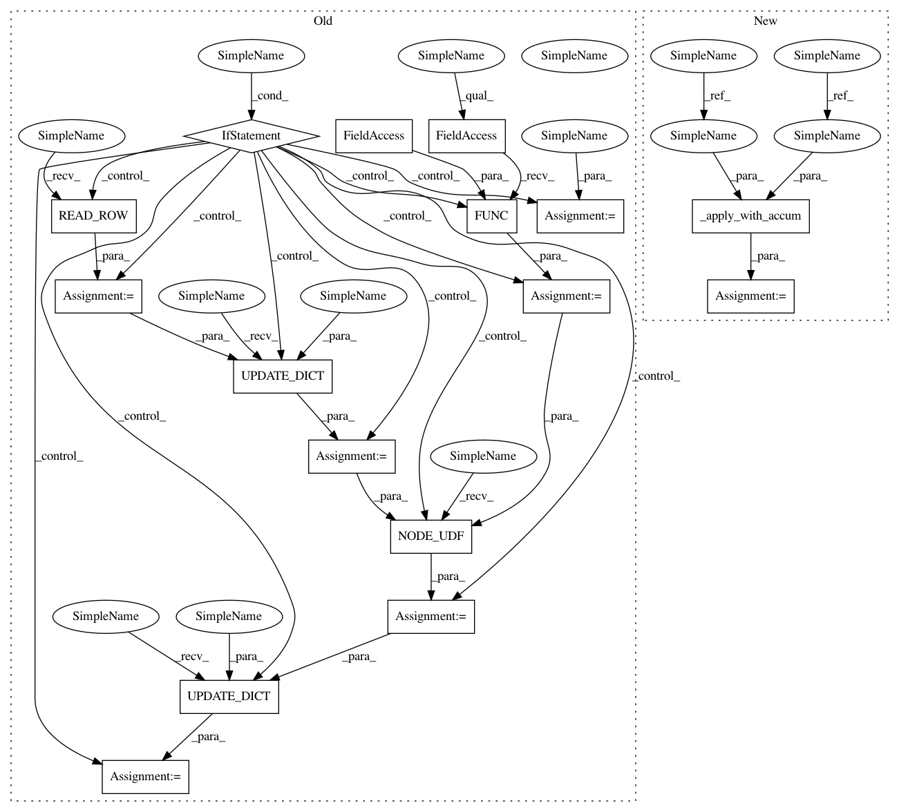

b1eeb934494ef1eee20cf2d35b718790cb9cb550,python/dgl/runtime/scheduler.py,,schedule_snr,#Any#Any#Any#Any#Any#,131
Before Change
reduced_feat = _gen_send_reduce(call_type, graph,
message_func, reduce_func, (var_u, var_v, var_eid), recv_nodes)
// generate apply schedule
if apply_func:
// To avoid writing reduced features back to node frame and reading
// it again for apply phase. Instead, we first read the the node
// features and "merge" it with the reduced features.
v_nf = ir.READ_ROW(var_nf, var_recv_nodes)
v_nf = ir.UPDATE_DICT(v_nf, reduced_feat)
def _afunc_wrapper(node_data):
nb = NodeBatch(graph, recv_nodes, node_data)
return apply_func(nb)
afunc = var.FUNC(_afunc_wrapper)
applied_feat = ir.NODE_UDF(afunc, v_nf)
final_feat = ir.UPDATE_DICT(reduced_feat, applied_feat)
else:
final_feat = reduced_feat
ir.WRITE_ROW_(var_nf, var_recv_nodes, final_feat)
def _gen_send_reduce(
call_type,
After Change
var_eid = var.IDX(eid)
var_recv_nodes = var.IDX(recv_nodes, name="recv_nodes")
// generate send and reduce schedule
reduced_feat = _gen_send_reduce(call_type, graph,
message_func, reduce_func, (var_u, var_v, var_eid), recv_nodes)
// generate apply schedule
final_feat = _apply_with_accum(graph, var_recv_nodes, var_nf, reduced_feat, apply_func)
ir.WRITE_ROW_(var_nf, var_recv_nodes, final_feat)
def schedule_update_all(graph, message_func, reduce_func, apply_func):
get send and recv schedule
In pattern: SUPERPATTERN
Frequency: 3
Non-data size: 16
Instances
Project Name: dmlc/dgl
Commit Name: b1eeb934494ef1eee20cf2d35b718790cb9cb550
Time: 2018-11-25
Author: minjie.wang@nyu.edu
File Name: python/dgl/runtime/scheduler.py
Class Name:
Method Name: schedule_snr
Project Name: dmlc/dgl
Commit Name: b1eeb934494ef1eee20cf2d35b718790cb9cb550
Time: 2018-11-25
Author: minjie.wang@nyu.edu
File Name: python/dgl/runtime/scheduler.py
Class Name:
Method Name: schedule_recv
Project Name: dmlc/dgl
Commit Name: b1eeb934494ef1eee20cf2d35b718790cb9cb550
Time: 2018-11-25
Author: minjie.wang@nyu.edu
File Name: python/dgl/runtime/scheduler.py
Class Name:
Method Name: schedule_update_all